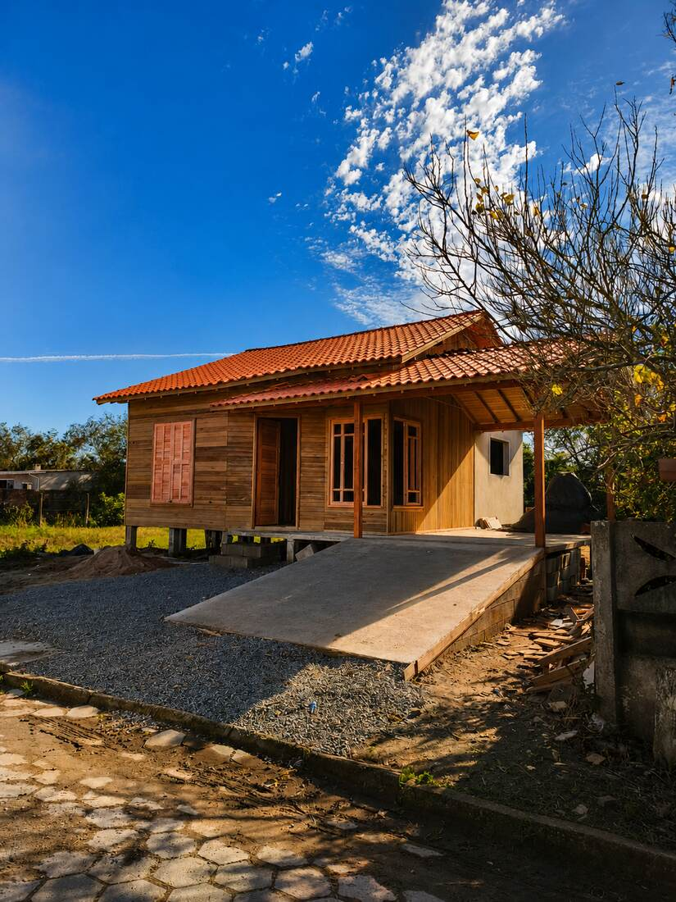

Projeto e terreno
Conferimos a planta, implantação, acesso à obra e condições do terreno para organizar as etapas e o escopo da construção.
A JP Carpintaria constrói casas de madeira em Tubarão, Laguna, Garopaba, Imbituba, Jaguaruna e região. Partimos da planta e das condições do terreno para planejar a estrutura, os fechamentos, a cobertura e os acabamentos de cada obra.
Falar sobre meu projeto
Gire o modelo, veja por dentro, a planta baixa e o valor de cada um, do básico ao alto padrão. Deck e varanda são orçados à parte.
Conferimos a planta, implantação, acesso à obra e condições do terreno para organizar as etapas e o escopo da construção.
O sistema construtivo, as ligações, ancoragens, vãos e tipo de telhado são definidos conforme o projeto e as verificações técnicas necessárias.
Separamos o que está incluído em fundação, estrutura, fechamento, cobertura, instalações e acabamento, com condições documentadas na proposta.
O primeiro passo é informar a cidade da obra, a metragem aproximada, os ambientes desejados e se você já tem planta ou croqui. Fotos e medidas do terreno ajudam a entender o acesso e a implantação da casa.
O orçamento deve deixar claro quais etapas estão incluídas: fundação, estrutura, fechamento, cobertura, instalações e acabamentos. Também conversamos sobre aberturas, tipo de telhado e os materiais que fazem sentido para seu projeto.
Para conhecer esse sistema construtivo, veja nossa página sobre construção de casas em wood frame em Tubarão e região.
Envie a cidade, planta ou croqui, metragem aproximada, número de pavimentos e fotos do terreno. Com esses dados, conseguimos entender melhor o serviço e combinar uma visita quando necessário.
Enviar informações pelo WhatsApp